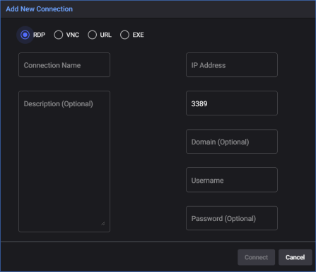
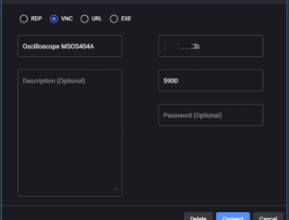
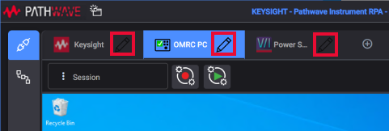
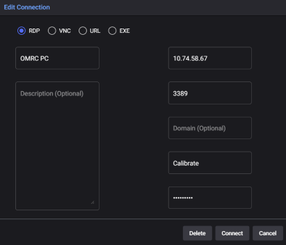

Connections to DUTs
The Device Under Test (DUT) is a key aspect of the RPA process. It represents the device or application that will be automated, serving as the target for the software robots to interact with and carry out the automated tasks.
Some common types of DUTs that you can connect to our RPA include the following:
Hardware devices: These are physical devices that can be automated, such as a power supply, oscilloscope, temperature sensor, and even VR/AR glasses.
Desktop applications: These are applications that are installed on a desktop or laptop computer, such as Pathwave BenchVue Software, Microsoft Excel, Adobe Photoshop, or Google Chrome.
Mobile applications: These are applications that run on a mobile device, such as an Android or iOS smartphone or tablet.
Web applications: These are applications that run in a web browser, such as Gmail, Facebook, or Salesforce.
By defining and configuring the DUT connection in RPA, you can enable the automation of tasks across different types of devices and applications.
Adding DUTs to the connection list
-
Click the Add Connection button in the Connection Column to add a new connection.
-
In the Add New Connection dialog box, select your targeted connection type from: RDP, VNC, URL, or EXE. To read about details of these 4 types of connections, see Four Connection Types below.
-
Enter a name for the connection in the Connection Name field to identify the connection.
-
Enter a description for the connection in the Description field. Although this field is optional, it's useful to have descriptive text to identify the connection.
-
Each connection includes the fields for entering DUT information.
-
Click Connect to save the connection details and the new connection is added.

The New Connection dialog box in RPA
Four Connection Types
RDP Connection
In the Add New Connection dialog box, select RDP to create an RDP connection.
-
IP address: IP address or hostname of the DUT you want to connect to.
-
Port number: RDP connections default to port 3389, but you can change this value in the port field if necessary.
-
Domain: For RDP connections, this information refers to the identity of a network domain, also known as a Windows domain. It is an optional information.
-
Username and Password: For RDP connections, this information refers to the Windows user account for the DUT you are connecting to. This information is always required for RDP connections.
Note: You must also configure the DUT to accept the connection for RDP.
VNC Connection
In the Add New Connection dialog box, select VNC to create a VNC connection.
-
IP address: IP address or hostname of the DUT you want to connect to.
-
Port number: For VNC connections, the port is set to 5900 by default. You can change the value in the Port field if necessary.
-
Password: This field refers to the values for the VNC server on the DUT.

The VNC connection dialog box IN RPA
URL Connection
In the Add New Connection dialog box, select URL to create an URL connection.
-
IP address: Enter the URL or IP address of a website you want to connect to.
-
Port number: To see the port number of a URL, you can simply look for the port number in the URL string. The port number is usually located immediately following the domain name or IP address and is separated by a colon (":"). If the port number is not specified in the URL, the browser assumes the default port number for the protocol. For example, the default port number for HTTP is 80, and the default port number for HTTPS is 443.
Note: For example, the URL "www.google.com" can be resolved to the IP address "172.217.16.174", which is the current IP address of the Google server. You can use the URL or IP address to create the connection successfully.
EXE Connection
In the Add New Connection dialog box, select EXE to create an EXE connection.
-
Executable path: Select an executable file on your computer from the drop-down list of Executable paths.

The EXE Connection dialog box in RPA
Note: If you encounter playback issues with the EXE connection, right-click RPA and select Run Elevated to solve the problem.
Closing or Editing a DUT connection
Click the Pen icon on the right side of each connection to open the Edit Connection dialog box. You can always edit the details of a connection or delete a connection here.

The Pen icon to edit/delete a connection in RPA

The Edit Connection dialog box in RPA